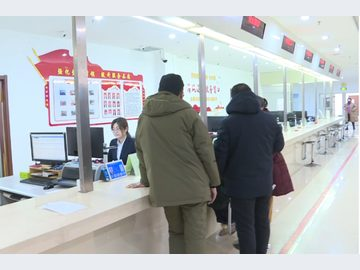
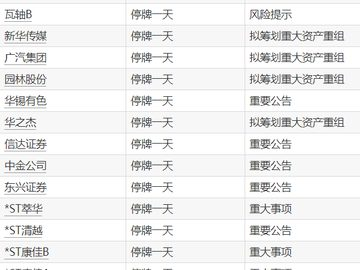

03
国务院关于金融工作情况的报告：支持中央汇金公司发挥类平准基金作用 巩固完善资本市场稳市机制
我受国务院委托，向全国人大常委会报告2025年10月以来金融工作情况，请予审议。

新华社北京11月6日电 国务院总理李强11月6日主持召开国务院常务会议，学习贯彻习近平总书记关于前三季度经济形势和后几个月重点工作的重要讲话精神…
科创企业依托长期资本持续攻坚“卡脖子”技术，制造企业借助债券融资推进设备技改，民宿、托育、养老等业态在普惠金融支持下蓬勃兴起……“十五五”开局之年…
我受国务院委托，向全国人大常委会报告2025年10月以来金融工作情况，请予审议。
今年前三季度，42家A股上市银行合计实现营业收入4.66万亿元，同比增长7.81%；实现归母净利润1.75万亿元，同比增长3.78%。
普惠金融下一步应该如何走？随着普惠信贷增速考核退出，普惠金融正在从过去的规模扩张转向稳投放、优结构、提质量和可持续发展。
过去几年，净息差持续收窄使商业银行经营压力不断加大。不过，今年A股上市银行在承压多年后初现回暖迹象。
混凝土泵车挥舞长臂，将灰浆精准注入地基；技术人员手持仪器，反复校核砌柱间距与平整度……在沈阳经济技术开发区，一座高端电力装备智能制造基地正拔地而起。

中共中央、国务院印发的《关于发展新质生产力的意见》（以下简称《意见》），把改造提升传统产业、培育壮大新兴产业、前瞻布局未来产业作为推动科技创新和产业创新深度…
为持续深化“放管服”改革，优化营商环境，切实打通政务服务便民“最后一公里”，鞍山市不动产登记中心升级线上服务渠道，依托“鞍山不动产掌上办”微信服务号…


本周国内商品整体走势分化，宏观预期与供需博弈主导行情。能化板块经历先扬后抑的剧烈波动，前期积累的地缘溢价快速消化。